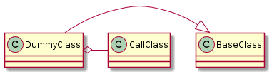
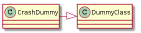

<!DOCTYPE html>


<html xmlns="http://www.w3.org/1999/xhtml">
  <head>
    <meta http-equiv="Content-Type" content="text/html; charset=utf-8" />
    
    <title>The Dummy &mdash; The Ape 0.0.1 documentation</title>
    
    <link rel="stylesheet" href="../../_static/basic.css" type="text/css" />
    <link rel="stylesheet" href="../../_static/pygments.css" type="text/css" />
    <link rel="stylesheet" href="../../_static/bootswatch-3.3.4/spacelab/bootstrap.min.css" type="text/css" />
    <link rel="stylesheet" href="../../_static/bootstrap-sphinx.css" type="text/css" />
    
    <script type="text/javascript">
      var DOCUMENTATION_OPTIONS = {
        URL_ROOT:    '../../',
        VERSION:     '0.0.1',
        COLLAPSE_INDEX: false,
        FILE_SUFFIX: '.html',
        HAS_SOURCE:  true
      };
    </script>
    <script type="text/javascript" src="../../_static/jquery.js"></script>
    <script type="text/javascript" src="../../_static/underscore.js"></script>
    <script type="text/javascript" src="../../_static/doctools.js"></script>
    <script type="text/javascript" src="../../_static/js/jquery-1.11.0.min.js"></script>
    <script type="text/javascript" src="../../_static/js/jquery-fix.js"></script>
    <script type="text/javascript" src="../../_static/bootstrap-3.3.4/js/bootstrap.min.js"></script>
    <script type="text/javascript" src="../../_static/bootstrap-sphinx.js"></script>
    <link rel="top" title="The Ape 0.0.1 documentation" href="../../index.html" />
    <link rel="up" title="Dummy Components" href="index.html" />
    <link rel="next" title="theape.parts.dummy.dummy.DummyClass" href="api/theape.parts.dummy.dummy.DummyClass.html" />
    <link rel="prev" title="theape.parts.dummy.callclass.CallClass.__name__" href="api/theape.parts.dummy.callclass.CallClass.__name__.html" />
<meta charset='utf-8'>
<meta http-equiv='X-UA-Compatible' content='IE=edge,chrome=1'>
<meta name='viewport' content='width=device-width, initial-scale=1.0, maximum-scale=1'>
<meta name="apple-mobile-web-app-capable" content="yes">

  </head>
  <body role="document">

  <div id="navbar" class="navbar navbar-default navbar-fixed-top">
    <div class="container">
      <div class="navbar-header">
        <!-- .btn-navbar is used as the toggle for collapsed navbar content -->
        <button type="button" class="navbar-toggle" data-toggle="collapse" data-target=".nav-collapse">
          <span class="icon-bar"></span>
          <span class="icon-bar"></span>
          <span class="icon-bar"></span>
        </button>
        <a class="navbar-brand" href="../../index.html">
          The Ape</a>
        <span class="navbar-text navbar-version pull-left"><b>0.0.1</b></span>
      </div>

        <div class="collapse navbar-collapse nav-collapse">
          <ul class="nav navbar-nav">
            
            
              <li class="dropdown globaltoc-container">
  <a role="button"
     id="dLabelGlobalToc"
     data-toggle="dropdown"
     data-target="#"
     href="../../index.html">Site <b class="caret"></b></a>
  <ul class="dropdown-menu globaltoc"
      role="menu"
      aria-labelledby="dLabelGlobalToc"><ul>
<li class="toctree-l1"><a class="reference internal" href="../../documentation/user/index.html">User Documentation</a></li>
<li class="toctree-l1"><a class="reference internal" href="../../documentation/developer/index.html">Developer Documentation</a></li>
</ul>
<ul>
<li class="toctree-l1"><a class="reference internal" href="../../log_setter.html">Log Setter</a></li>
<li class="toctree-l1"><a class="reference internal" href="../../main.html">The Main Entry Point</a></li>
<li class="toctree-l1"><a class="reference internal" href="../../readme.html">The APE (Read Me)</a></li>
</ul>
<ul class="current">
<li class="toctree-l1"><a class="reference internal" href="../../components/index.html">The Components</a></li>
<li class="toctree-l1"><a class="reference internal" href="../../infrastructure/index.html">The Ape&#8217;s Infrastructure</a></li>
<li class="toctree-l1 current"><a class="reference internal" href="../index.html">Parts</a></li>
<li class="toctree-l1"><a class="reference internal" href="../../plugins/index.html">Plugins</a></li>
</ul>
</ul>
</li>
              
                <li class="dropdown">
  <a role="button"
     id="dLabelLocalToc"
     data-toggle="dropdown"
     data-target="#"
     href="#">Page <b class="caret"></b></a>
  <ul class="dropdown-menu localtoc"
      role="menu"
      aria-labelledby="dLabelLocalToc"><ul>
<li><a class="reference internal" href="#">The Dummy</a><ul>
<li><a class="reference internal" href="#module-theape.components.dummy.dummy">The Dummy Class</a></li>
<li><a class="reference internal" href="#a-crash-dummy">A Crash Dummy</a></li>
<li><a class="reference internal" href="#the-hanging-dummy">The Hanging Dummy</a></li>
<li><a class="reference internal" href="#an-example">An Example</a></li>
</ul>
</li>
</ul>
</ul>
</li>
              
            
            
              
                
  <li>
    <a href="api/theape.parts.dummy.callclass.CallClass.__name__.html" title="Previous Chapter: theape.parts.dummy.callclass.CallClass.__name__"><span class="glyphicon glyphicon-chevron-left visible-sm"></span><span class="hidden-sm hidden-tablet">&laquo; theape.parts....</span>
    </a>
  </li>
  <li>
    <a href="api/theape.parts.dummy.dummy.DummyClass.html" title="Next Chapter: theape.parts.dummy.dummy.DummyClass"><span class="glyphicon glyphicon-chevron-right visible-sm"></span><span class="hidden-sm hidden-tablet">theape.parts.... &raquo;</span>
    </a>
  </li>
              
            
            
            
            
              <li class="hidden-sm">
<div id="sourcelink">
  <a href="../../_sources/parts/dummy/dummy.txt"
     rel="nofollow">Source</a>
</div></li>
            
          </ul>

          
            
<form class="navbar-form navbar-right" action="../../search.html" method="get">
 <div class="form-group">
  <input type="text" name="q" class="form-control" placeholder="Search" />
 </div>
  <input type="hidden" name="check_keywords" value="yes" />
  <input type="hidden" name="area" value="default" />
</form>
          
        </div>
    </div>
  </div>

<div class="container">
  <div class="row">
    <div class="col-md-12 content">
      
  <div class="section" id="the-dummy">
<h1>The Dummy<a class="headerlink" href="#the-dummy" title="Permalink to this headline">¶</a></h1>
<p>This module holds classes to help test the running of the infrastructure.</p>
<div class="section" id="module-theape.components.dummy.dummy">
<span id="the-dummy-class"></span><h2>The Dummy Class<a class="headerlink" href="#module-theape.components.dummy.dummy" title="Permalink to this headline">¶</a></h2>
<p>The Dummy module holds dummy classes that do nothing. They is primarily used to test implementations of infrastructure components.</p>
<p class="plantuml">

</p>
<span class="target" id="module-theape.parts.dummy.dummy"></span><table border="1" class="longtable docutils">
<colgroup>
<col width="10%" />
<col width="90%" />
</colgroup>
<tbody valign="top">
<tr class="row-odd"><td><a class="reference internal" href="../../plugins/api/theape.parts.dummy.dummy.DummyClass.html#theape.parts.dummy.dummy.DummyClass" title="theape.parts.dummy.dummy.DummyClass"><code class="xref py py-obj docutils literal"><span class="pre">DummyClass</span></code></a>(*args,&nbsp;**kwargs)</td>
<td>The Dummy Class does nothing</td>
</tr>
<tr class="row-even"><td><a class="reference internal" href="../../plugins/api/theape.parts.dummy.dummy.DummyClass.__call__.html#theape.parts.dummy.dummy.DummyClass.__call__" title="theape.parts.dummy.dummy.DummyClass.__call__"><code class="xref py py-obj docutils literal"><span class="pre">DummyClass.__call__</span></code></a>(*args,&nbsp;**kwargs)</td>
<td>Logs the fact that it was called</td>
</tr>
<tr class="row-odd"><td><a class="reference internal" href="api/theape.parts.dummy.dummy.DummyClass.__str__.html#theape.parts.dummy.dummy.DummyClass.__str__" title="theape.parts.dummy.dummy.DummyClass.__str__"><code class="xref py py-obj docutils literal"><span class="pre">DummyClass.__str__</span></code></a>()</td>
<td>Returns the class name</td>
</tr>
<tr class="row-even"><td><a class="reference internal" href="api/theape.parts.dummy.dummy.DummyClass.__getattr__.html#theape.parts.dummy.dummy.DummyClass.__getattr__" title="theape.parts.dummy.dummy.DummyClass.__getattr__"><code class="xref py py-obj docutils literal"><span class="pre">DummyClass.__getattr__</span></code></a>(attribute)</td>
<td>To catch unimplemented parts of the class and log them</td>
</tr>
</tbody>
</table>
<p>The Dummy Class logs (at the <cite>info</cite>) level when it is created and when it is called.</p>
</div>
<div class="section" id="a-crash-dummy">
<h2>A Crash Dummy<a class="headerlink" href="#a-crash-dummy" title="Permalink to this headline">¶</a></h2>
<p>This is a Dummy that raises an error when called.</p>
<p class="plantuml">

</p>
<table border="1" class="longtable docutils">
<colgroup>
<col width="10%" />
<col width="90%" />
</colgroup>
<tbody valign="top">
<tr class="row-odd"><td><a class="reference internal" href="../../plugins/api/theape.parts.dummy.dummy.CrashDummy.html#theape.parts.dummy.dummy.CrashDummy" title="theape.parts.dummy.dummy.CrashDummy"><code class="xref py py-obj docutils literal"><span class="pre">CrashDummy</span></code></a>(error[,&nbsp;error_message,&nbsp;function])</td>
<td>A dummy that crashes</td>
</tr>
<tr class="row-even"><td><a class="reference internal" href="../../plugins/api/theape.parts.dummy.dummy.CrashDummy.html#theape.parts.dummy.dummy.CrashDummy.check_rep" title="theape.parts.dummy.dummy.CrashDummy.check_rep"><code class="xref py py-obj docutils literal"><span class="pre">CrashDummy.check_rep</span></code></a>()</td>
<td>crashes on check_rep() if that&#8217;s the function</td>
</tr>
<tr class="row-odd"><td><a class="reference internal" href="../../plugins/api/theape.parts.dummy.dummy.CrashDummy.html#theape.parts.dummy.dummy.CrashDummy.close" title="theape.parts.dummy.dummy.CrashDummy.close"><code class="xref py py-obj docutils literal"><span class="pre">CrashDummy.close</span></code></a>()</td>
<td>Crashes if close is the function</td>
</tr>
<tr class="row-even"><td><a class="reference internal" href="api/theape.parts.dummy.dummy.CrashDummy.__getattr__.html#theape.parts.dummy.dummy.CrashDummy.__getattr__" title="theape.parts.dummy.dummy.CrashDummy.__getattr__"><code class="xref py py-obj docutils literal"><span class="pre">CrashDummy.__getattr__</span></code></a>(attribute)</td>
<td>To catch unimplemented parts of the class and log them</td>
</tr>
</tbody>
</table>
<div class="admonition note">
<p class="first admonition-title">Note</p>
<p class="last">check_rep and close don&#8217;t need to be implemented to crash, but the Composite is checking if it has the attributes before calling them so they have to be implemented to crash them</p>
</div>
</div>
<div class="section" id="the-hanging-dummy">
<h2>The Hanging Dummy<a class="headerlink" href="#the-hanging-dummy" title="Permalink to this headline">¶</a></h2>
<p>This is a Dummy that will block forever.</p>
<p class="plantuml">

</p>
<table border="1" class="longtable docutils">
<colgroup>
<col width="10%" />
<col width="90%" />
</colgroup>
<tbody valign="top">
<tr class="row-odd"><td><a class="reference internal" href="../../plugins/api/theape.parts.dummy.dummy.HangingDummy.html#theape.parts.dummy.dummy.HangingDummy" title="theape.parts.dummy.dummy.HangingDummy"><code class="xref py py-obj docutils literal"><span class="pre">HangingDummy</span></code></a>(*args,&nbsp;**kwargs)</td>
<td>A dummy that hangs</td>
</tr>
<tr class="row-even"><td><a class="reference internal" href="../../plugins/api/theape.parts.dummy.dummy.HangingDummy.__call__.html#theape.parts.dummy.dummy.HangingDummy.__call__" title="theape.parts.dummy.dummy.HangingDummy.__call__"><code class="xref py py-obj docutils literal"><span class="pre">HangingDummy.__call__</span></code></a>(*args,&nbsp;**kwargs)</td>
<td>Sleeps for three years in an infinite loop</td>
</tr>
</tbody>
</table>
</div>
<div class="section" id="an-example">
<h2>An Example<a class="headerlink" href="#an-example" title="Permalink to this headline">¶</a></h2>
<p>As an example we can create an operator and make some fake calls to it (I do not think the logging will get captured by Pweave, though).</p>
<div class="code python highlight-python"><div class="highlight"><pre><span></span><span class="k">if</span> <span class="n">output_documentation</span><span class="p">:</span>
    <span class="k">class</span> <span class="nc">FakeLogger</span><span class="p">(</span><span class="nb">object</span><span class="p">):</span>
        <span class="k">def</span> <span class="nf">info</span><span class="p">(</span><span class="bp">self</span><span class="p">,</span> <span class="n">output</span><span class="p">):</span>
            <span class="k">print</span><span class="p">(</span><span class="n">output</span><span class="p">)</span>

    <span class="k">class</span> <span class="nc">KingKong</span><span class="p">(</span><span class="n">DummyClass</span><span class="p">):</span>
        <span class="k">def</span> <span class="nf">__init__</span><span class="p">(</span><span class="bp">self</span><span class="p">,</span> <span class="o">*</span><span class="n">args</span><span class="p">,</span> <span class="o">**</span><span class="n">kwargs</span><span class="p">):</span>
            <span class="nb">super</span><span class="p">(</span><span class="n">KingKong</span><span class="p">,</span> <span class="bp">self</span><span class="p">)</span><span class="o">.</span><span class="n">__init__</span><span class="p">(</span><span class="o">*</span><span class="n">args</span><span class="p">,</span> <span class="o">**</span><span class="n">kwargs</span><span class="p">)</span>
            <span class="bp">self</span><span class="o">.</span><span class="n">_logger</span> <span class="o">=</span> <span class="n">FakeLogger</span><span class="p">()</span>
            <span class="k">return</span>


    <span class="n">kongs</span> <span class="o">=</span> <span class="p">(</span><span class="n">KingKong</span><span class="p">(</span><span class="n">index</span><span class="p">,</span> <span class="n">name</span><span class="p">)</span> <span class="k">for</span> <span class="n">index</span><span class="p">,</span><span class="n">name</span> <span class="ow">in</span> <span class="nb">enumerate</span><span class="p">(</span><span class="s1">&#39;Kong MightyJoe&#39;</span><span class="o">.</span><span class="n">split</span><span class="p">()))</span>
    <span class="k">for</span> <span class="n">kong</span> <span class="ow">in</span> <span class="n">kongs</span><span class="p">:</span>
        <span class="n">kong</span><span class="o">.</span><span class="n">rampage</span><span class="p">()</span>
        <span class="n">kong</span><span class="p">(</span><span class="s1">&#39;fay wray&#39;</span><span class="p">)</span>
</pre></div>
</div>
<div class="code highlight-python"><div class="highlight"><pre><span></span>&#39;rampage&#39; attribute called on KingKong
KingKong Called
Args: (&#39;fay wray&#39;,)
Kwargs: {}
&#39;rampage&#39; attribute called on KingKong
KingKong Called
Args: (&#39;fay wray&#39;,)
Kwargs: {}
</pre></div>
</div>
<p>I had to add a fake logger because pweave does not capture logging output. If you run this module:</p>
<div class="highlight-python"><div class="highlight"><pre><span></span>python dummy.py
</pre></div>
</div>
<p>You should see what is being sent to the logger in full color (without the extra ANSI codes).</p>
</div>
</div>


    </div>
      
  </div>
</div>
<footer class="footer">
  <div class="container">
    <p class="pull-right">
      <a href="#">Back to top</a>
      
    </p>
    <p>
        &copy; Copyright 2014, the cloistered monkey.<br/>
      Created using <a href="http://sphinx-doc.org/">Sphinx</a> 1.3.6.<br/>
    </p>
  </div>
</footer>
  </body>
</html>